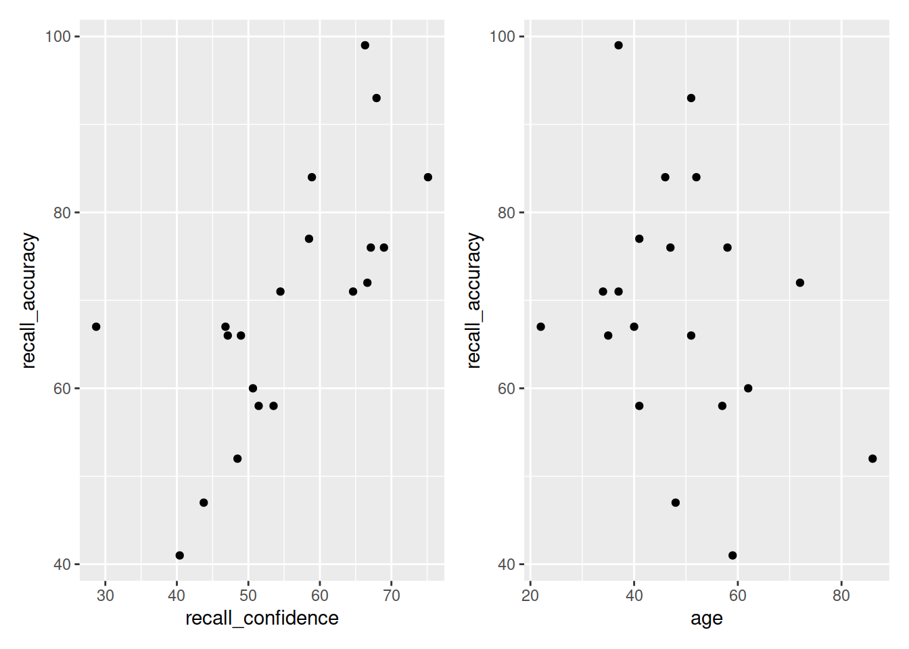

Covariance, Correlation, and Modelling
Reading: Covariance & Correlation
Our data for this walkthrough is from a (hypothetical) study on memory. Twenty participants studied passages of text (c500 words long), and were tested a week later. The testing phase presented participants with 100 statements about the text. They had to answer whether each statement was true or false, as well as rate their confidence in each answer (on a sliding scale from 0 to 100). The dataset contains, for each participant, the percentage of items correctly answered, and the average confidence rating. Participants’ ages were also recorded.
Let’s take a look at the relationships between the percentage of items answered correctly (recall_accuracy) and participants’ average self-rating of confidence in their answers (recall_confidence):
library(tidyverse)
library(patchwork)
recalldata <- read_csv("https://edin.ac/2wHhCej")
ggplot(recalldata, aes(x=recall_confidence, recall_accuracy))+
geom_point() +
ggplot(recalldata, aes(x=age, recall_accuracy))+
geom_point()
These two relationships look quite different.
- For participants who tended to be more confident in their answers, the percentage of items they correctly answered tends to be higher.
- The older participants were, the lower the percentage of items they correctly answered tended to be.
Which relationship should we be more confident in and why?
Ideally, we would have some means of quantifying the strength and direction of these sorts of relationship. This is where we come to the two summary statistics which we can use to talk about the association between two numeric variables: Covariance and Correlation.
Covariance
Covariance is the measure of how two variables vary together. It is the change in one variable associated with the change in another variable.
For samples, covariance is calculated using the following formula:
\[\mathrm{cov}(x,y)=\frac{1}{n-1}\sum_{i=1}^n (x_{i}-\bar{x})(y_{i}-\bar{y})\]
where:
- \(x\) and \(y\) are two variables; e.g.,
ageandrecall_accuracy; - \(i\) denotes the observational unit, such that \(x_i\) is value that the \(x\) variable takes on the \(i\)th observational unit, and similarly for \(y_i\);
- \(n\) is the sample size.
In R
We can calculate covariance in R using the cov() function.
cov() can take two variables cov(x = , y = ).
cov(x = recalldata$recall_accuracy, y = recalldata$recall_confidence)## [1] 118.0768


Correlation - \(r\)
You can think of correlation as a standardized covariance. It has a scale from negative one to one, on which the distance from zero indicates the strength of the relationship.
Just like covariance, positive/negative values reflect the nature of the relationship.
The correlation coefficient is a standardised number which quantifies the strength and direction of the linear relationship between two variables. In a population it is denoted by \(\rho\), and in a sample it is denoted by \(r\).
We can calculate \(r\) using the following formula:
\[
r_{(x,y)}=\frac{\mathrm{cov}(x,y)}{s_xs_y}
\]
We can actually rearrange this formula to show that the correlation is simply the covariance, but with the values \((x_i - \bar{x})\) divided by the standard deviation (\(s_x\)), and the values \((y_i - \bar{y})\) divided by \(s_y\):
\[
r_{(x,y)}=\frac{1}{n-1} \sum_{i=1}^n \left( \frac{x_{i}-\bar{x}}{s_x} \right) \left( \frac{y_{i}-\bar{y}}{s_y} \right)
\]
The correlation is the simply the covariance of standardised variables (variables expressed as the distance in standard deviations from the mean).
Properties of correlation coefficients
- \(-1 \leq r \leq 1\)
- The sign indicates the direction of association
- positive association (\(r > 0\)) means that values of one variable tend to be higher when values of the other variable are higher
- negative association (\(r < 0\)) means that values of one variable tend to be lower when values of the other variable are higher
- no linear association (\(r \approx 0\)) means that higher/lower values of one variable do not tend to occur with higher/lower values of the other variable
- The closer \(r\) is to \(\pm 1\), the stronger the linear association
- \(r\) has no units and does not depend on the units of measurement
- The correlation between \(x\) and \(y\) is the same as the correlation between \(y\) and \(x\)
In R
Just like R has a cov() function for calculating covariance, there is a cor() function for calculating correlation:
cor(x = recalldata$recall_accuracy, y = recalldata$recall_confidence)## [1] 0.6993654
Correlation Test
Now that we’ve seen the formulae for covariance and correlation, as well as how to quickly calculate them in R using cov() and cor(), we can use a statistical test to establish the probability of finding an association this strong by chance alone.
Hypotheses
Remember, hypotheses are about the population parameter (in this case the correlation between the two variables in the population - i.e., \(\rho\)).
Null Hypothesis
- There is not a linear relationship between \(x\) and \(y\) in the population.
\(H_0: \rho = 0\)
Alternative Hypothesis
- There is a positive linear relationship between \(x\) and \(y\) in the population.
\(H_1: \rho > 0\)
- There is a negative linear relationship between \(x\) and \(y\) in the population.
\(H_1: \rho < 0\)
- There is a linear relationship between \(x\) and \(y\) in the population.
\(H_1: \rho \neq 0\)
Test statistic
Our test statistic here is another \(t\) statistic, the formula for which depends on both the observed correlation (\(r\)) and the sample size (\(n\)):
\[t = r \sqrt{\frac{n-2}{1-r^2}}\]
\(p\)-value
We calculate the p-value for our \(t\)-statistic as the long-run probability of a \(t\)-statistic with \(n-2\) degrees of freedom being less than, greater than, or more extreme in either direction (depending on the direction of our alternative hypothesis) than our observed \(t\)-statistic.
Assumptions
- Both variables are quantitative
- Both variables should be drawn from normally distributed populations.
- The relationship between the two variables should be linear.
In R
We can test the significance of the correlation coefficient really easily with the function cor.test():
cor.test(recalldata$recall_accuracy, recalldata$recall_confidence)##
## Pearson's product-moment correlation
##
## data: recalldata$recall_accuracy and recalldata$recall_confidence
## t = 4.1512, df = 18, p-value = 0.0005998
## alternative hypothesis: true correlation is not equal to 0
## 95 percent confidence interval:
## 0.3719603 0.8720125
## sample estimates:
## cor
## 0.6993654
Cautions!
Correlation is an invaluable tool for quantifying relationships between variables, but must be used with care.
Below are a few things to be aware of when we talk about correlation.


Game: Guess the \(r\)
Take a break and play this “guess the correlation” game to get an idea of what different strengths and directions of \(r\) can look like.
(if the game is not showing, try http://guessthecorrelation.com/).
source: http://guessthecorrelation.com/